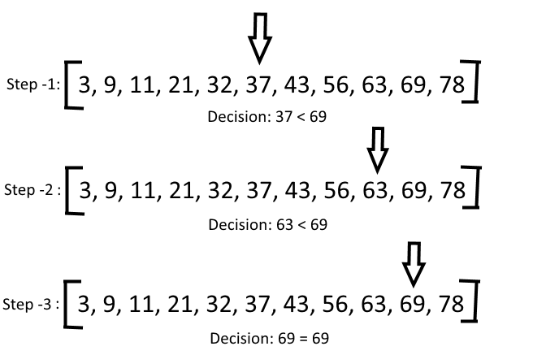

June 29, 2014
Question: How to implement binary search algorithm?
Answer:Binary search tries to find an item in a sorted list. For example, if you have an array like [3,9,11,21,32,37,43,56,63,69,78] and you are looking for 69.
How it works:Lets select the middle one, you got: 37. You are looking for 69. As you know, the array is sorted, you will know that 69 will be after 37. This means upper half of the array. Now, you will go and check the middle item of the upper half of the array. In that way, you are saving time to search the item in the lower half of the array.
The middle item of the upper half of the array is 63. Which is smaller than the number you are looking for. Hence, you can skip the lower part of the upper half. This means, your item will be in the top most quarter of the array. Now, you will keep the right side and pick the middle
The middle of the right side is 69. Thats what you were looking for.
Why binary search If you were using linear search (start from the left and check one by one), you have to check 10 times to find the item. If you use binary search, you get after three times. You see the benefits!!
Now if you have a million items in an array. For example, you have number 0 to 1000,000 and you want to find out 696,969. The binary search will take only 17 steps to find the item. where as if you start a linear search, it will take 696,969 steps to find the item.
function binarySearchIterative(arr, val){
var start = 0,
end = arr.length-1,
mid,
midVal;
while(end >= start){
mid = Math.floor((start+end)/2);
midVal = arr[mid];
if(midVal==val)
return mid;
if(val<midVal)
end = mid - 1;
if(val>midVal)
start = mid + 1;
}
return -1;
}
//try it now
binarySearchIterative([1,2,3,4,5], 1); //0
binarySearchIterative([1,2,3,4,5], 5); //4
binarySearchIterative([1,2,3,4,5], 55); //-1
Complexity
Recusrive algo
function binarySearchRecursive(arr, val, startIdx, endIdx){
var mid = Math.floor((startIdx + endIdx)/2),
midVal = arr[mid];
if(midVal == val)
return mid;
if (endIdx < startIdx)
return -1;
if (val<midVal)
return binarySearchRecursive(arr, val, startIdx, mid -1);
else if (val > midVal)
return binarySearchRecursive(arr, val, mid + 1, endIdx);
}
//try it now
binarySearchRecursive([1,2,3,4,5], 1, 0, 4); //0
binarySearchRecursive([1,2,3,4,5], 5, 0, 4); //4
binarySearchRecursive([1,2,3,4,5], 2, 0, 4); //1
binarySearchRecursive([1,2,3,4,5], 22, 0, 4); //-1
ref: binary search